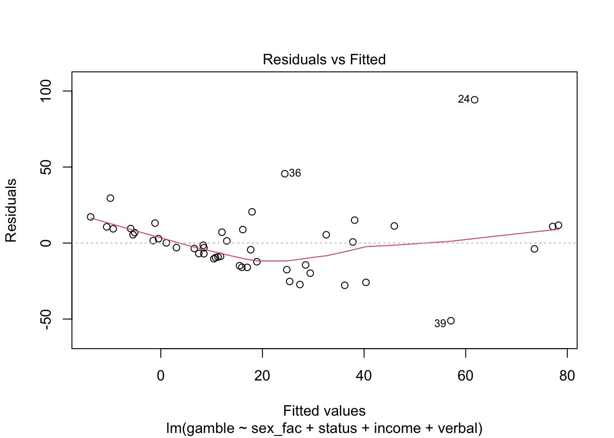
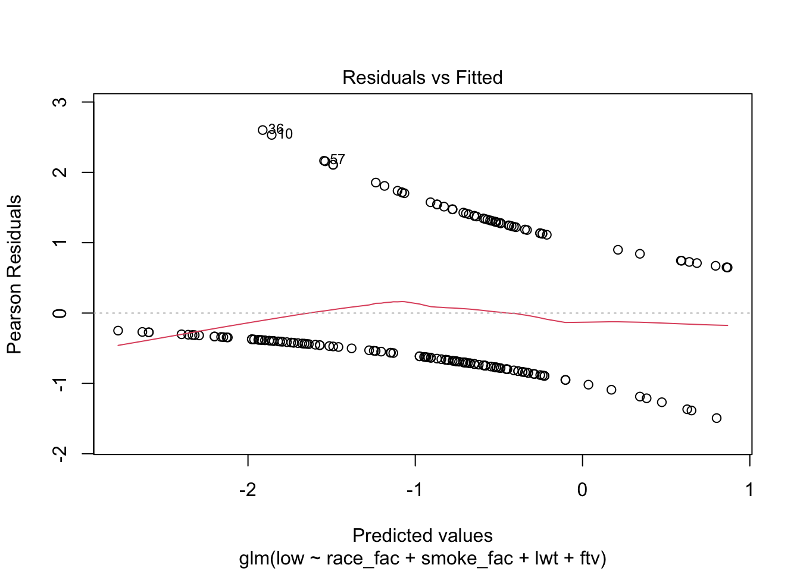
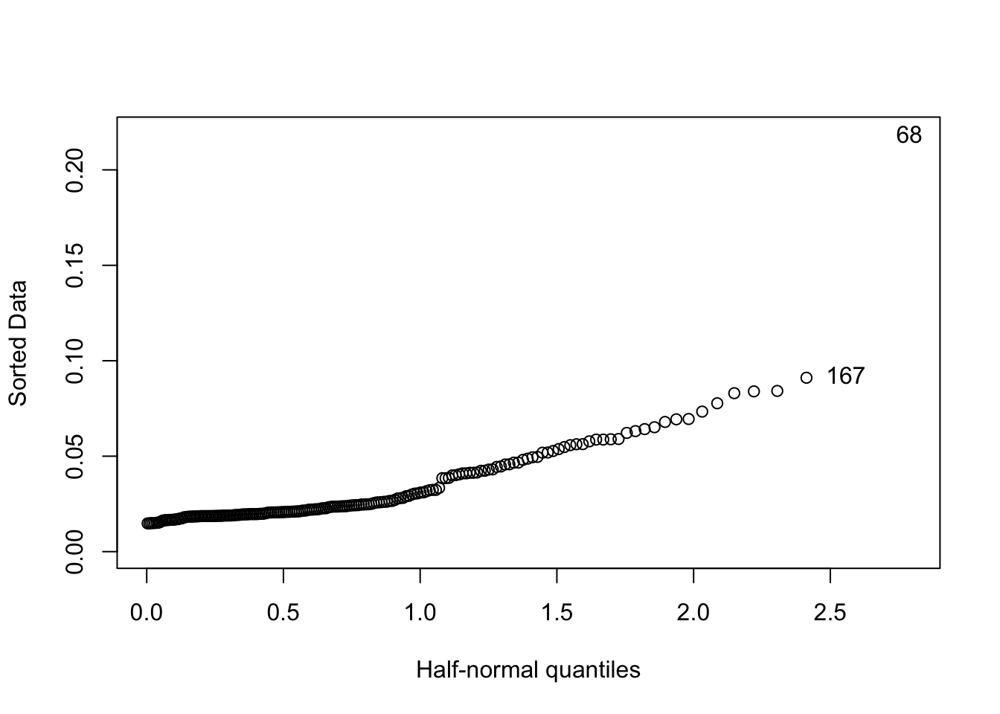

5 Model Fit and Assumptions for GLMs
Two general kinds of approaches, both are important!
- Detecting single cases or a small group of cases that are affecting the overall fit or do not seem to go with the rest of the data
- Outlier detection, influence, leverage
- Checking model assumptions
- Structural form of the model: do we have the right set of predictors, do they need to be transformed?
- Stochastic or random form: eg., do residuals conform to model assumptions
We’ll step through this for Ordinary Linear Regression and Logistic Regression, as those are the two approaches that we’ll continue to deal with in the course
Remember:
It is virtually impossible to verify that a given model is exactly correct. The purpose of the diagnostics is more to check whether the model is not grossly wrong. Indeed, a successful data analyst should pay more attention to avoiding big mistakes than optimizing the fit. (Faraway, p. 14)
5.1 Model Checking and Diagnostics in Ordinary Least Squares
As we have seen, for ordinary linear models, the plot function returns very helpful output. Let’s take a look at it again for the teengamb data that is in the faraway package.
As a reminder:
- Data has 47 rows and 5 columns. It was a from a survey studying teenage gambling in the UK
- Variables:
- sex: 0 = male, 1 = female
- status: Socioeconomic status score based on parents’ occupation
- income: in pounds per week
- verbal: verbal score in words out of 12 correctly defined
- gamble: expenditure on gambling in pounds per year
Here, we’ll change sex to a factor and have a look at the results again
teengamb$sex_fac <- factor(teengamb$sex, levels = c(0, 1), labels = c("Male","Female"))
## model with numeric variable
gamb.mod.fac <- lm(gamble ~ sex_fac + status + income + verbal, data = teengamb)
summary(gamb.mod.fac)##
## Call:
## lm(formula = gamble ~ sex_fac + status + income + verbal, data = teengamb)
##
## Residuals:
## Min 1Q Median 3Q Max
## -51.082 -11.320 -1.451 9.452 94.252
##
## Coefficients:
## Estimate Std. Error t value Pr(>|t|)
## (Intercept) 22.55565 17.19680 1.312 0.1968
## sex_facFemale -22.11833 8.21111 -2.694 0.0101 *
## status 0.05223 0.28111 0.186 0.8535
## income 4.96198 1.02539 4.839 1.79e-05 ***
## verbal -2.95949 2.17215 -1.362 0.1803
## ---
## Signif. codes: 0 '***' 0.001 '**' 0.01 '*' 0.05 '.' 0.1 ' ' 1
##
## Residual standard error: 22.69 on 42 degrees of freedom
## Multiple R-squared: 0.5267, Adjusted R-squared: 0.4816
## F-statistic: 11.69 on 4 and 42 DF, p-value: 1.815e-06We can also see that drop1 will utilize the residual \(SS\) from each model, which relates to model deviance
## Single term deletions
##
## Model:
## gamble ~ sex_fac + status + income + verbal
## Df Sum of Sq RSS AIC F value Pr(>F)
## <none> 21624 298.18
## sex_fac 1 3735.8 25360 303.67 7.2561 0.01011 *
## status 1 17.8 21642 296.21 0.0345 0.85349
## income 1 12056.2 33680 317.00 23.4169 1.792e-05 ***
## verbal 1 955.7 22580 298.21 1.8563 0.18031
## ---
## Signif. codes: 0 '***' 0.001 '**' 0.01 '*' 0.05 '.' 0.1 ' ' 1But let’s see the residual plots again. This time we’ll go in order
5.1.1 Residuals v. Fitted Values
First, we have the residuals v. the fitted values. For OLS, the residuals are the raw residuals
That is:
\[ \text{resid: } y_{i} - \hat{y}_{i}\\ \text{fitted: } \hat{y}_{i} = 22.56 - 22.12(Female_{i}) + 0.05(Status_{i}) + 4.96(Income_{i}) - 2.96(Verbal_{i}) \]

We see some evidence that the variance of the residuals changes as predicted values increase. This violates the homoskedasticity assumption, and affects standard errors
5.1.2 Normalty of residuals
This assumption is only relevant for GLMs with the Gaussian random component. We don’t expect normally distributed residuals for Poisson, Logistic, etc.
Also, with larger datasets, if the normality is less crucial as inference can still be robust. Like with other plots, it takes experience to interpret these and know what to do about them.

We can see that for most responses, things look good, but cases 24, 36, and 39 appear again!
5.1.3 Leverage
Let’s take a closer look at leverage. We do so using the so-called “hat matrix” (because it puts a “hat” on \(y\)):
First, define fitted values using matrix notation:
\[ \hat{y} = \textbf{X}\hat{\beta} \\ = \textbf{X}(\textbf{X}^{T}\textbf{X})^{-1}\textbf{X}^T\textbf{y} \\ = \textbf{H}\textbf{y} \]
The first part is \(\textbf{H}\) and the diagonal values \(h_{i} = \textbf{H}_{ii}\) are the leverages
We define the variance of the residuals: \(\text{var}(\hat{\epsilon}_{i}) = \sigma^{2}(1-h_{i})\)
So large values of \(h_{i}\) exert leverage since they tend to make the variance small and subsequently to “force” the fit of the regression line close to that particular \(y_{i}\)
5.1.4 Influence
It’s hard to look at the leverages so Cook defined a statistic using standardized residuals, \(r_i = \epsilon / \text{SE}(\epsilon)\) that we’ll call Cook’s Distance:
\[ D_{i}= \frac{(\hat{y}-\hat{y}_{(i)})^{T}(\hat{y}-\hat{y}_{(i)})}{p\sigma^{2}} = \frac{1}{p}r^{2}_{i}\frac{h_{i}}{1-h_{i}} \]
It basically represents a scaled change of fit when a particular case \(y_{(i)}\) is dropped from the dataset.
Below we have the leverages and standardized residuals. Cook’s distances are shown as contour lines.

There’s that case 24 again! Let’s check it out more closely along with a couple of others.
## sex status income verbal gamble sex_fac
## 24 0 27 10 4 156 Male
## 39 0 51 10 6 6 Male## 24 39
## 61.74778 57.08241So we see that with case 24, we’re actually under predicting, and with case 39 we’re way over. These are both males with the same income level and similar verbal scores, but of different statuses.
What we do with these cases varies in different situations. This is a real dataset and these are plausible values of the covariates, so we would probably leave it alone. However, this is also a small dataset, so we might like to see how things shake out in a follow-up study.
5.2 Model Checking and Diagnostics in Logistic Regression
When we move to the logistic regression environment, we now have more complicated residuals, but the process is very similar, with a few twists.
Let’s look at the birthweight data that you analyzed for HW 3
## 'data.frame': 189 obs. of 10 variables:
## $ low : int 0 0 0 0 0 0 0 0 0 0 ...
## $ age : int 19 33 20 21 18 21 22 17 29 26 ...
## $ lwt : int 182 155 105 108 107 124 118 103 123 113 ...
## $ race : int 2 3 1 1 1 3 1 3 1 1 ...
## $ smoke: int 0 0 1 1 1 0 0 0 1 1 ...
## $ ptl : int 0 0 0 0 0 0 0 0 0 0 ...
## $ ht : int 0 0 0 0 0 0 0 0 0 0 ...
## $ ui : int 1 0 0 1 1 0 0 0 0 0 ...
## $ ftv : int 0 3 1 2 0 0 1 1 1 0 ...
## $ bwt : int 2523 2551 2557 2594 2600 2622 2637 2637 2663 2665 ...We’ll go ahead and model presence of low birthweight using the mother’s race, smoking status, mother’s weight at last menstrual period (lwt) and the number of physician visits during the first trimester (ftv)
# full model
mod3 <- glm(low ~ race_fac + smoke_fac + lwt + ftv, data = birthwt, family = binomial)
summary(mod3)##
## Call:
## glm(formula = low ~ race_fac + smoke_fac + lwt + ftv, family = binomial,
## data = birthwt)
##
## Coefficients:
## Estimate Std. Error z value Pr(>|z|)
## (Intercept) -0.103559 0.886013 -0.117 0.90695
## race_facblack 1.284937 0.511773 2.511 0.01205 *
## race_facother 0.963552 0.415185 2.321 0.02030 *
## smoke_facsmoker 1.055738 0.379667 2.781 0.00542 **
## lwt -0.013106 0.006392 -2.051 0.04031 *
## ftv -0.025504 0.161963 -0.157 0.87488
## ---
## Signif. codes: 0 '***' 0.001 '**' 0.01 '*' 0.05 '.' 0.1 ' ' 1
##
## (Dispersion parameter for binomial family taken to be 1)
##
## Null deviance: 234.67 on 188 degrees of freedom
## Residual deviance: 214.99 on 183 degrees of freedom
## AIC: 226.99
##
## Number of Fisher Scoring iterations: 4## Waiting for profiling to be done...## OR 2.5 % 97.5 %
## (Intercept) 0.9016227 0.1660422 5.4902084
## race_facblack 3.6144402 1.3289453 10.0493156
## race_facother 2.6209902 1.1754754 6.0409987
## smoke_facsmoker 2.8740954 1.3837707 6.1837182
## lwt 0.9869793 0.9739259 0.9988046
## ftv 0.9748189 0.7003830 1.3293647## Single term deletions
##
## Model:
## low ~ race_fac + smoke_fac + lwt + ftv
## Df Deviance AIC LRT Pr(>Chi)
## <none> 214.99 226.99
## race_fac 2 224.09 232.09 9.1004 0.010565 *
## smoke_fac 1 223.08 233.08 8.0891 0.004453 **
## lwt 1 219.68 229.68 4.6926 0.030293 *
## ftv 1 215.01 225.01 0.0249 0.874558
## ---
## Signif. codes: 0 '***' 0.001 '**' 0.01 '*' 0.05 '.' 0.1 ' ' 1This is a large enough dataset that we might be able to use the residual deviance in Pearson’s \(X^{2}\) but that’s not usually done in logistic regression. Instead, we’ll compute two fit statistics before looking at the diagnostic plots.
Note, we already produced an ROC plot as well as computing the area under the curve, which also help with testing model fit, so we’ll skip those here.
5.2.1 Hosmer-Lemeshow Test
Hosmer and Lemeshow (e.g., 2013) devised a method for checking the fit of a logistic regression model by a Chi-square like procedure of examining how close predicted probabilities are to the observations in the dataset:
\[
X^{2}_{HL} = \sum_{j=1}^{J}\frac{(y_{j}-m_{j}\hat{p}_{j})}{m_{j}\hat{p}_{j}(1-\hat{p})}
\]
It has an approximate \(\chi^2\) distribution with \(J - 1\) degrees of freedom. One issue is choosing the bin size. Many programs default to \(J = 10\). We’ll use the hoslem function from the
y <- mod3$y # the y-values
y_hat <- mod3$fitted.values # the predicted probabilities
(HL_test <- ResourceSelection::hoslem.test(x = y, y = y_hat))##
## Hosmer and Lemeshow goodness of fit (GOF) test
##
## data: y, y_hat
## X-squared = 7.8931, df = 8, p-value = 0.444We might also choose to make a calibration plot, which is a little beyond the scope of the course, but the test suggest that we’d find our predictions in line with the observed proportion of “ones” at different levels of predicted values.
5.2.2 Nagelkerke’s pseudo R-squared
Another measure that approaches fit, but from a different perspective is the Nagelkerke \(R^{2}\)
We have the equation in our older notes, so we’ll just point out that it is a function of the likelihoods of our model and a null model, and can be computed using the model deviances. It will never be as high as in ordinary linear regression due to the nature of binary data, but it is helpful for comparing different logistic models.
## [1] 0.13908155.2.3 Residuals and leverages
Raw residuals are not as helpful in logistic regression, since they can only take one of two values for any fixed set of predictor values.

Deviance residuals can be plotted, but they require a binned plot, which is not ready made, and requires some coding. See p. 36-37 in Faraway for more. Those plots need not have mean of zero for residuals, but we would like to see constant variance.
We can, however, produce a kind of QQ plot for the leverage values. We’ll use the halfnorm function from faraway to plot the leverages and pick out any extreme values:

We see that case 68 has quite a lot of leverage, and for comparison, we’ll also look at case 167
## low race_fac smoke_fac lwt ftv
## 68 1 white smoker 120 3
## 167 0 white smoker 135 0predict(mod3, newdata = birthwt[c("68","167"), c("low", "race_fac","smoke_fac","lwt","ftv")], "response")## 68 167
## 0.3324594 0.3063656## Min. 1st Qu. Median Mean 3rd Qu. Max.
## 0.0000 0.0000 0.0000 0.7937 1.0000 6.0000We see that the median number of first trimester visits is 0 but that case 68 had 3. The other values aren’t so extreme. The two cases have similar predicted probabilities, however, so it’s not clear what’s going on.
Either way, the calibration may be a bit off for folks with higher numbers of ftv
5.3 Summary
Regression diagonistics are part of “model criticism” where we try to figure out if our model is too wrong or bad to be of any use. We hope to find that it will be good enough and-or that perhaps there are ways to improve it.
This process is very straightforward with ordinary linear regression, but in generalized linear modeling, specialized procedures exist for the discrete outcomes models
We’ll return to these diagonstic procedures when we start to fit random-effects and fixed-effects models